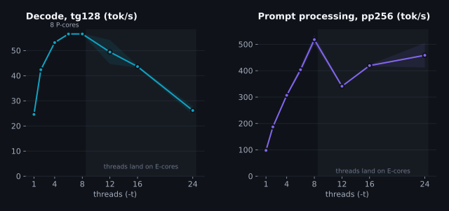
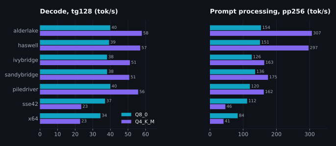
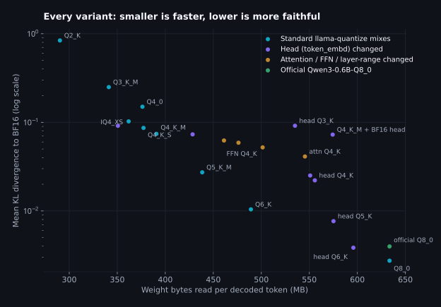
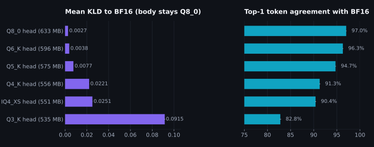
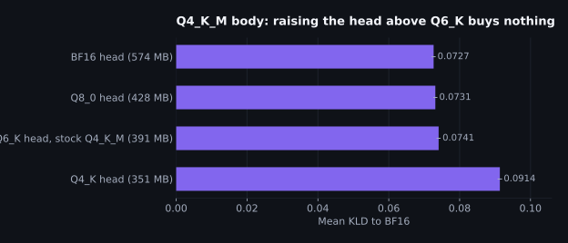
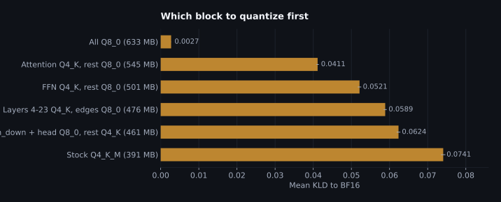
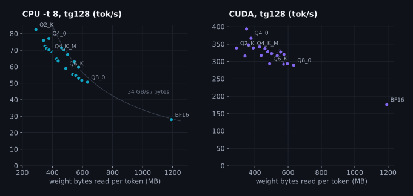
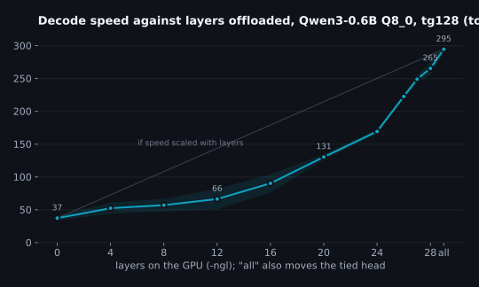
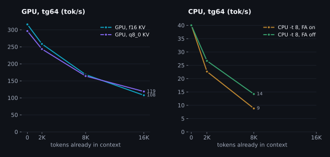
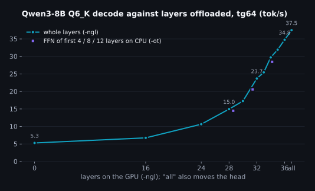

Getting the most tokens per second out of one laptop with llama.cpp
The question I kept getting
Every few weeks someone at work asks me a version of the same thing. "We have this laptop, or this one box in the office. Which quant should we run? How many threads? Is the GPU worth it for a small model? Why does the number on the llama.cpp README not match what we see?" I had opinions, and most of them came from reading other people's benchmarks on hardware nothing like ours. That bothered me. So I took one small model, one laptop I use every day, and went through every knob llama.cpp exposes with a stopwatch in one hand and a perplexity tool in the other.
The idea I actually wanted to test came from a hunch. A transformer isn't one blob of weights. It's an embedding table, a stack of layers, and an output head, and each of those can be stored at a different precision. If the output head is a quarter of the model and it gets read on every single token, then quantizing just that tensor should buy speed without touching the layers that do the reasoning. Or the opposite: maybe the head is exactly the thing you should protect and the layers are where the cheap bytes are. I didn't know. Now I do, with error bars.
This is a long post. It's structured so you can stop at any section and still leave with something usable. Every number here was produced by a script in the companion repository, every chart is drawn from a results file you can open, and the whole thing runs on a prebuilt llama.cpp release. No compiler needed, unless you want one.
| Section | What you get |
|---|---|
| The machine and the model | Why a single 16 GB DIMM sets the ceiling, and why the LM head is 26% of every token |
| Threads on a hybrid CPU | The default thread count is wrong on 12th to 14th gen Intel, and by how much |
| Which CPU DLL you're running | How llama.cpp picks one of fourteen ggml-cpu libraries, and what forcing a different one costs |
| Quantization, speed and accuracy | Twenty-one variants scored against BF16 with KL divergence, not vibes |
| The tied LM head | What happens when you quantize only the head, and when you protect only the head |
| GPU | Why a 0.6B model can't use a 384 GB/s card, and what to do about it |
| When the model doesn't fit | Qwen3-8B on an 8 GB card: layer splits versus tensor placement |
| Speculative decoding without a draft model | Self-drafting from n-grams, with the same greedy output |
| A driver in a few hundred lines | Talking to llama.dll from Python with cffi, and where the overhead really is |
| Choosing for your hardware | A decision guide by CPU family, RAM, VRAM and workload |
The machine and the model
The laptop is an ASUS TUF F16 with an Intel Core i7-14650HX, an RTX 5060 Laptop GPU with 8 GB of GDDR7, one 16 GB DDR5-5600 SO-DIMM and an NVMe drive. That "one" matters more than anything else on the list. The board has two memory slots and only one is populated, so the CPU has a single 64-bit channel to memory. Peak theoretical bandwidth is 5600 MT/s times 8 bytes, which is 44.8 GB/s. A second DIMM would double it. Keep that number in mind; the whole CPU half of this post is a story about it.
| Component | What it is | What matters for inference |
|---|---|---|
| CPU | Intel i7-14650HX, 8 P-cores + 8 E-cores, 24 threads, Raptor Lake HX | AVX2, FMA, F16C and AVX-VNNI. No AVX-512. Hybrid scheduling is the trap. |
| Memory | 1 x 16 GB DDR5-5600, single channel | 44.8 GB/s theoretical. I measured 34.0 GB/s achievable. |
| GPU | NVIDIA RTX 5060 Laptop, 8 GB GDDR7, 128-bit bus, compute capability 12.0 | 384 GB/s. About 7 GB free with the desktop and other things resident. |
| Storage | 1 TB NVMe (WD SN5000S) | Only matters for the first load; every model here fits in RAM. |
| OS and build | Windows 11, llama.cpp b10941 (0.4.0-dev), prebuilt win-cpu-x64 and win-cuda-13.3-x64 zips | Built with Clang 20. The CUDA zip carries native sm_120a code, so no PTX JIT on Blackwell. |
The model is Qwen3-0.6B, the official Qwen/Qwen3-0.6B-GGUF Q8_0 file, 639 MB on
disk. I picked it because it's small enough to run every experiment on both the CPU and the
GPU dozens of times, and because it has a property that makes the head question sharp: its
output projection is tied to its input embedding. There is no output.weight tensor
in the file. The 151,936 x 1024 token_embd.weight matrix does both jobs.
role params(M) MB %params %bytes types
token_embd.weight 155.58 165.31 26.10 26.09 Q8_0
blk.*.attn_q.weight 58.72 62.39 9.85 9.85 Q8_0
blk.*.attn_k.weight 29.36 31.20 4.93 4.92 Q8_0
blk.*.attn_v.weight 29.36 31.20 4.93 4.92 Q8_0
blk.*.attn_output.weight 58.72 62.39 9.85 9.85 Q8_0
blk.*.ffn_gate.weight 88.08 93.59 14.78 14.77 Q8_0
blk.*.ffn_up.weight 88.08 93.59 14.78 14.77 Q8_0
blk.*.ffn_down.weight 88.08 93.59 14.78 14.77 Q8_0
norms (F32) 0.06 0.24 0.01 0.04 F32
TOTAL params 596.05 M, bytes 633.50 MB, mean bpw 8.503
Twenty-six percent of the bytes are the embedding matrix. Here's the part that took me a while
to internalize. When a token goes in, the model looks up one row of that matrix: a
get_rows op that touches 1 KB. When a token comes out, the model multiplies
the final hidden state by the whole matrix to get a logit for every one of the 151,936
vocabulary entries. That's a mul_mat that reads all 165 MB. So the input side is
free and the output side costs a quarter of the model, on every decode step, no matter what
you do to the layers.
One more detail that turned out to matter for reproducing other people's numbers. Not every
Qwen3-0.6B GGUF on Hugging Face is tied. The HF safetensors checkpoint ships a redundant
lm_head.weight even though the config says tie_word_embeddings: true,
and the converter doesn't drop it. So the ggml-org and bartowski files have 311 tensors and an
extra 165 MB output.weight, while the official Qwen file and the unsloth files have
310. Bytes read per token are the same either way, since the head gets read once regardless of
which tensor holds it, but file size, RAM footprint and the default quantization mix all
differ. If someone's numbers don't match yours, check the tensor count first.
Bytes per token, the only model you need
Generating one token with a dense model means reading every weight once. Prompt processing is different, because a batch of 512 tokens shares one read of the weights, but decode is one token at a time and the arithmetic per byte is tiny. On this CPU the decode step does roughly 1.9 floating point operations per byte it reads; the chip can do about 23 per byte before it would run out of memory bandwidth. So decode is bandwidth-bound by more than an order of magnitude, and the fastest it can possibly go is
tokens/s <= bandwidth / bytes_read_per_token
CPU, theoretical: 44.8 GB/s / 0.6335 GB = 70.7 tok/s (Qwen3-0.6B Q8_0, weights only)
CPU, measured: 34.0 GB/s / 0.6335 GB = 53.7 tok/s
GPU, theoretical: 384 GB/s / 0.6335 GB = 606 tok/sNobody achieves the spec sheet, so I measured what a plain streaming read gets: eight processes each summing a private 512 MB buffer, started on a barrier so they overlap, aggregate bytes over wall time. Best pass was 34.0 GB/s, 76% of theoretical. llama.cpp's own kernels turned out to do slightly better than my naive test, reaching about 36 GB/s at their best, so the honest ceiling is somewhere between 53.7 and 70.7 tok/s for this file on this CPU. Every CPU result below should be read against that range. If a change moves you closer to it, it was a real improvement. If you're already near it, no kernel on earth is going to double your speed; only fewer bytes per token will, or a way to get more than one token per read.
The KV cache adds to the bytes as context grows. For this model that's 112 KB per position at f16, which is small next to 633 MB of weights until you're thousands of tokens deep. I measured that too, further down.
Baseline: what you get out of the box
Before touching anything, I ran llama-bench exactly the way most people would:
the model, the prebuilt binary, no flags. Prompt processing at 512 tokens, generation at 128,
five repetitions, the process at high priority so the OS doesn't preempt it for the browser.
bin\cpu\llama-bench.exe -m Qwen3-0.6B-Q8_0.gguf -p 512 -n 128 -r 5 --prio 2 -ngl 0
bin\cuda\llama-bench.exe -m Qwen3-0.6B-Q8_0.gguf -p 512 -n 128 -r 5 --prio 2| Backend | Threads | pp512 (tok/s) | tg128 (tok/s) | Share of the bandwidth ceiling | Condition |
|---|---|---|---|---|---|
| CPU, defaults | 16 (auto) | 217.4 ± 0.2 | 19.5 ± 1.0 | 28% of 70.7 | working load |
| CUDA, defaults | all layers on GPU | 19654 ± 1179 | 303.1 ± 22.0 | 50% of 606 | working load |
Two things jump out. The CPU is at 28% of its bandwidth ceiling, which is a lot of headroom for a workload that is supposed to be limited by bandwidth. And the GPU, with eleven times the measured bandwidth, is 16 times faster, which sounds like a win for the GPU until you notice it's sitting at half of its own ceiling. Both have specific causes, and both are fixable without recompiling anything.
One word about that last column, because it matters for every CPU number in this post. This baseline was taken under my normal working load: two dev servers, a VM, an IDE and a few agents in the background. Some of the measurements below were taken in a quiet stretch with all of that idle, and the two conditions differ by more than most of the flags I'm about to test. Every table says which it is.
Threads on a hybrid CPU
llama.cpp's default thread count on Windows is the number of physical cores. On this chip that
is 16: eight performance cores and eight efficiency cores. The Linux build excludes E-cores
when it can read the topology; the Windows build doesn't, and llama-bench --help
confirms (default: 16). Here's what that costs, one sweep from 1 to 24 threads,
run in a quiet stretch with nothing else on the machine, decode and prompt processing as two
separate passes.

| Threads | pp256 (tok/s) | tg128 (tok/s) |
|---|---|---|
| 1 | 97.9 ± 1.0 | 24.6 ± 0.3 |
| 2 | 187.0 ± 1.4 | 42.4 ± 0.5 |
| 4 | 306.7 ± 3.2 | 53.2 ± 0.4 |
| 6 | 403.6 ± 13.1 | 56.6 ± 0.3 |
| 8 | 517.9 ± 18.0 | 56.6 ± 0.1 |
| 12 | 341.2 ± 2.6 | 49.4 ± 4.8 |
| 16 | 419.4 ± 3.1 | 43.6 ± 0.5 |
| 24 | 458.6 ± 46.4 | 26.2 ± 1.6 |
Decode is flat from six to eight threads, 56.6 and 56.6 tok/s, and then gets
worse with every thread you add: 23% slower at the default of 16, 54%
slower at 24. How much worse depends on the day. Two more paired runs of 16 against 8 threads
in the same quiet window gave 53.8 and 52.3 against 55.4 and 56.4, a 5% loss, with 24 threads
at 44.5; the sweep's 16-thread point was a worse placement than those. And under my
working load, the baseline above, the default was 48% slower than -t 8
(19.5 ± 1.0 against 37.3 ± 3.4, measured back to back). So the honest range for the
cost of the default on this chip is "somewhere between a few percent and half, and it gets
worse the busier the machine is". The reason is structural. Every matrix multiply in the decode graph is split
across the threads, and the graph can't move on until the slowest thread finishes its slice.
Thread nine lands on an E-core with a lower clock and a smaller share of the memory system,
so it finishes last, and the seven P-cores that were done early sit at the barrier waiting
for it. Sixteen threads means eight of them are slow, and the fast ones spend most of every
step idle. The wide error bar at 12 threads, 4.8 tok/s across five runs, is the
scheduler sometimes getting the placement right and sometimes not.
I expected prompt processing to behave differently, because it's arithmetic-bound and an
E-core does contribute real FLOPs. It didn't. In the same sweep pp256 peaked at eight threads
too, 518 tok/s against 419 at sixteen and 459 at twenty-four. The
batch is split into slices the same way the decode matmuls are, and a slice on an E-core still
takes longer than the rest of the step. To make sure I wasn't reading noise, I ran 8 versus 16
threads back to back on pp512 three more times: 483 against 415, 434 against 228 and 172 against 231 tok/s. The one pair where 16 won is
the one where something woke up mid-run; I looked and couldn't see what. Prompt processing,
being compute-bound, is the measurement that suffers most from a busy machine. Sixteen threads pinned
to the eight P-cores with their SMT siblings did 461, the same as eight pinned
(461), so hyperthreading doesn't add anything either. On this chip and this build the
answer is one number, not two: -t 8, and leave -tb alone unless you've
measured it on your own machine. Linux builds that exclude E-cores automatically get this
right by default; the Windows build doesn't.
What about pinning the eight threads to the eight P-cores explicitly, one per physical core,
with -C 0x5555 --cpu-strict 1? I expected this to be the best CPU result in the
post, and for a while I thought it was: an early pinned run gave 52.3 tok/s when an
unpinned -t 8 run from my first, noisier thread sweep an hour earlier had given
34.7. But this laptop isn't
a benchmark rig. It runs two Vite dev servers, a VM, an IDE and a pile of agents while I work,
and the load comes and goes. When I finally measured the two settings back to back in a quiet
stretch, unpinned -t 8 did 56.9 tok/s and strict pinning did
56.0. The same. The earlier gap was the machine, not the flag. And in a paired run
with the background load present, strict pinning gave 40.9 ± 14.4 tok/s against
37.3 ± 3.4 for plain -t 8, with individual samples of 54, 51, 49, 27 and 24:
whenever a pinned core was busy, the whole barrier waited on it, and a strictly pinned thread
can't migrate. So the recommendation is the boring one. Set the thread count to the number
of P-cores and let the scheduler place them. Pinning bought nothing when it was safe and cost
a third when it wasn't.
One more result from the same run that I didn't expect: eight threads confined to just four
P-cores with their SMT siblings (-C 0xFF --cpu-strict 1, effectively) decoded at
56.4 tok/s, the same as eight threads on eight cores. Decode needs enough
outstanding memory requests to keep the controller busy, and four cores with hyperthreads
generate as many as eight cores without. Prompt processing, which needs the arithmetic,
dropped from 286 to 222 tok/s. If you're sizing a CPU for decode,
bandwidth per core matters more than core count.
I also tried E-cores alone, eight threads strictly pinned to logical CPUs 16 to 23. Prompt processing was fine at 130 tok/s. Decode was 1.72 tok/s. Not a typo. That's what a barrier-bound workload looks like on cores that share a small ring stop and run at a fraction of the clock; every step is a full round of the slowest core's memory latency. If you have ever wondered why a background LLM task on a laptop crawls while the fan barely spins, this is probably why: Windows put it on the E-cores.
One thing that did nothing: --poll. The Windows release is built with OpenMP, and
the poll setting is only read by llama.cpp's own threadpool. If you want to tune spin-wait
behaviour on Windows, the knobs are the OpenMP ones, KMP_BLOCKTIME and
OMP_WAIT_POLICY, not --poll.
Which CPU DLL you're running
Unzip the Windows CPU release and you'll find fourteen files named ggml-cpu-*.dll:
x64, sse42, sandybridge, ivybridge, haswell, skylakex, cannonlake, icelake, cascadelake,
cooperlake, sapphirerapids, alderlake, zen4 and piledriver. Each one is the same CPU backend
compiled with a different set of instruction-set flags. Only one gets loaded. The question I
had was how it decides, whether it decides well, and what happens when it doesn't.
The mechanism lives in ggml-backend-reg.cpp. At start-up, ggml scans the executable's
folder for backend libraries, and for each CPU variant it calls an exported
ggml_backend_score() function. The score is computed in
cpu-feats-x86.cpp from CPUID: every feature the variant was built with is a
required bit, and if the running CPU lacks any of them the score is zero. Among the survivors,
more features means a higher score, and the highest score wins. On the i7-14650HX that's
alderlake, the only variant that pairs AVX2 and FMA with AVX-VNNI; haswell
is the runner-up and the seven AVX-512 variants score zero because the chip doesn't have it.
You can see the decision in the first line of any tool's output:
load_backend: loaded CPU backend from ...\bin\cpu\ggml-cpu-alderlake.dll
There is no flag or environment variable to force a variant. GGML_BACKEND_PATH
exists, but it registers an additional backend after auto-selection rather than replacing it.
What does work is the crude thing: a folder containing the executables, ggml.dll,
ggml-base.dll, llama.dll and exactly one ggml-cpu-*.dll.
With one candidate, the highest score is that one. So I made fourteen folders and ran the same
benchmark in each, with Q8_0 and Q4_K_M, because the two families use different code paths.

| DLL variant | Instruction set it assumes | Q8_0 pp256 | Q8_0 tg128 | Q4_K_M pp256 | Q4_K_M tg128 |
|---|---|---|---|---|---|
alderlake | AVX2, FMA, F16C, BMI2, AVX-VNNI | 154 ± 36 | 39.9 ± 1.0 | 307 ± 16 | 57.9 ± 1.3 |
haswell | AVX2, FMA, F16C, BMI2 | 151 ± 15 | 39.3 ± 1.3 | 297 ± 18 | 57.0 ± 1.3 |
ivybridge | AVX, F16C | 126 ± 7 | 38.1 ± 1.0 | 163 ± 7 | 51.1 ± 4.1 |
sandybridge | AVX | 136 ± 11 | 38.2 ± 1.0 | 175 ± 3 | 50.7 ± 1.4 |
piledriver | AVX, FMA, F16C (AMD) | 120 ± 3 | 40.0 ± 0.7 | 162 ± 10 | 55.8 ± 2.1 |
sse42 | SSE4.2 | 112 ± 2 | 37.0 ± 1.3 | 46 ± 0 | 23.5 ± 0.2 |
x64 | SSE2 baseline | 84 ± 1 | 34.4 ± 1.3 | 41 ± 1 | 22.8 ± 0.9 |
skylakex | AVX-512 family | does not load on this CPU | |||
cannonlake | AVX-512 family | does not load on this CPU | |||
icelake | AVX-512 family | does not load on this CPU | |||
cascadelake | AVX-512 family | does not load on this CPU | |||
cooperlake | AVX-512 family | does not load on this CPU | |||
sapphirerapids | AVX-512 family | does not load on this CPU | |||
zen4 | AVX-512 family | does not load on this CPU | |||
Seven of the fourteen refuse to load, with a clear CPU backend is not loaded error: every
variant that assumes AVX-512. Of the seven that run, look at the Q8_0 decode column first. It
barely moves. From the plain x64 build with no vector extensions beyond SSE2 to the alderlake
build, decode goes from 34 to 40 tok/s, because Q8_0 decode is waiting on memory whichever
kernel does the multiply. Now look at Q4_K_M. On alderlake and haswell it's 58 tok/s, the
fastest decode in this post on the CPU. On sandybridge and ivybridge, which have AVX but not
AVX2, it drops to 51. On sse42 and x64 it collapses to 23 tok/s, slower than Q8_0 on the same
DLL. Unpacking K-quant blocks is real arithmetic, and without 256-bit integer instructions
that arithmetic becomes the bottleneck instead of the memory bus. Prompt processing tells the
same story more loudly: Q4_K_M goes from 307 tok/s on alderlake to 41 on x64, a factor of
seven. The alderlake versus haswell difference, which is AVX-VNNI, was within noise on both
quants.
The instruction that separates alderlake from haswell is vpdpbusd, the AVX-VNNI
dot product of unsigned and signed bytes. In ggml's x86 kernels it's reached through the
shared int8 helpers that the Q8_0, Q4_0, Q4_1, Q5_0, Q5_1 and IQ4_NL dot products call. The
K-quant kernels, Q4_K through Q6_K, don't go through those helpers; they use the older
maddubs and madd pair with per-sub-block scales. So on paper VNNI can
only ever help the "0" family. In practice, on this model, it didn't help either family
measurably: Q8_0 prompt processing was 154 tok/s on alderlake and 151 on haswell, well inside
the run-to-run spread. The dot product isn't where a 0.6B model spends its prompt time. What
the variant really buys you is the jump from 128-bit to 256-bit integer math, and that jump
is worth a factor of two to seven depending on the quant.
What this means for choosing a build: the auto-selection is right, and you shouldn't fight it. The cases where you need to know about the variants are the two failure modes. If you copy the binaries to a server and only bring one DLL, you've silently chosen the variant, and if it's the wrong one you'll get either a slow build or no CPU backend at all (a lone unsupported DLL doesn't fall back to anything). And if you're on a CPU family the release doesn't have a variant for, you get the nearest lower one, which is fine on decode and costs you something on prompt processing. The table at the end of this post maps common CPUs to the variant they'll get.
Measuring accuracy properly
Speed without an accuracy number is a trap. Anyone can make a model fast by throwing bits away. So before the quantization experiments, a word on how I scored them, because the method matters as much as the results.
Perplexity alone isn't enough. It tells you how surprised the model is by real text, and a quantized model can have almost the same perplexity as the original while disagreeing with it on which token is most likely a good fraction of the time. The measure I trust is the one llama.cpp's own contributors use to judge quantization: run the reference model over a text corpus, save its full logit distribution at every position, then run the quantized model over the same text and compute the Kullback-Leibler divergence between the two distributions at each position. KLD is zero when the quantized model produces the same distribution as the reference. It captures every kind of drift, not just the one token that happened to be correct.
# 1. BF16 reference over 200 chunks of 512 tokens of wikitext-2 test (51,000 scored positions), on the GPU
llama-perplexity -m Qwen3-0.6B-BF16.gguf -f wiki.test.raw -c 512 --chunks 200 -ngl 99 \
--kl-divergence-base base-bf16-c512-200.kld # 15.5 GB file, 82 seconds
# 2. Each variant, same text, same chunking
llama-perplexity -m variant.gguf -f wiki.test.raw -c 512 --chunks 200 -ngl 99 \
--kl-divergence-base base-bf16-c512-200.kld --kl-divergenceA few things I learned about the tool that the README doesn't spell out. The stored logits are not fp16: each position holds a scale, a minimum, and one uint16 per vocabulary entry, which for a 152K vocabulary is 304 KB per scored token. That's why the full wikitext-2 test set would be a 42 GB file, and why I capped it at 200 chunks. Two hundred chunks at 512 tokens scores about 51,000 positions, enough that the error bars on mean KLD are in the fifth decimal place. Running BF16 against its own stored logits gives a KLD of 0.00000 and a top-1 agreement of 99.99%, which is the encoding noise floor; everything below is well above it.
Two caveats on interpretation. Wikitext perplexity on an instruction-tuned, thinking-mode model is a relative measure of degradation, not a task score; the text is scored raw, with no chat template. And the popular thresholds you'll see quoted, "KLD under 0.01 is indistinguishable, over 0.1 is noticeable", are folklore. They aren't in any llama.cpp discussion I could find. What I use instead is the in-tree reference table for Llama-3-8B: q8_0 scored 0.0014, q6_K 0.0055, q4_K_M 0.031, q3_K_M 0.10, q2_K 0.44. Keep those in mind when you read the 0.6B numbers, because a 600M-parameter model is far more fragile than an 8B one.
Twenty-one variants, one chart
I built every variant from the unsloth BF16 GGUF with llama-quantize from the same
b10941 release, using unsloth's importance matrix for every type below Q8_0. Three families:
the standard mixes you'd download from any quant provider; variants where only the tied head
changes; and variants where a specific block changes, attention versus FFN versus a range of
layers. The plot below has bytes-per-token on the x axis and KLD on a log y axis. Down and to
the left is good.

| Variant | MB / token | Head | PPL | Mean KLD | 99th pct KLD | RMS Δp | Top-1 agree |
|---|---|---|---|---|---|---|---|
| BF16 (reference vs its own stored logits) | 1192 | BF16 | 21.90 | -0.0000 ± 0.0000 | 0.000 | 0.0% | 100.0% |
| Q8_0 (requantized from BF16) | 633 | Q8_0 | 21.89 | 0.0027 ± 0.0000 | 0.017 | 1.3% | 97.0% |
| Q8_0 (official Qwen file) | 633 | Q8_0 | 21.95 | 0.0040 ± 0.0000 | 0.027 | 1.6% | 96.4% |
| Q8_0 body, Q6_K head | 596 | Q6_K | 21.94 | 0.0038 ± 0.0000 | 0.021 | 1.5% | 96.3% |
| Q8_0 body, Q5_K head | 575 | Q5_K | 21.96 | 0.0077 ± 0.0000 | 0.038 | 2.1% | 94.7% |
| Q6_K | 489 | Q6_K | 21.94 | 0.0104 ± 0.0001 | 0.065 | 2.5% | 94.3% |
| Q8_0 body, Q4_K head | 556 | Q4_K | 22.38 | 0.0221 ± 0.0001 | 0.100 | 3.5% | 91.3% |
| Q8_0 body, IQ4_XS head | 551 | IQ4_XS | 22.17 | 0.0251 ± 0.0001 | 0.113 | 3.7% | 90.4% |
| Q5_K_M | 438 | Q6_K | 22.43 | 0.0273 ± 0.0002 | 0.184 | 4.0% | 91.3% |
| Q8_0, attention at Q4_K | 545 | Q8_0 | 22.43 | 0.0411 ± 0.0003 | 0.273 | 4.9% | 89.4% |
| Q8_0, FFN at Q4_K | 501 | Q8_0 | 22.54 | 0.0521 ± 0.0004 | 0.393 | 5.8% | 88.0% |
| Q8_0 edges, layers 4-23 at Q4_K | 476 | Q8_0 | 22.68 | 0.0589 ± 0.0004 | 0.383 | 6.0% | 87.2% |
| Q4_K_M with ffn_down and head at Q8_0 | 461 | Q8_0 | 22.71 | 0.0624 ± 0.0005 | 0.440 | 6.2% | 87.2% |
| Q4_K_M body, BF16 head | 574 | BF16 | 22.90 | 0.0727 ± 0.0006 | 0.508 | 6.7% | 86.1% |
| Q4_K_M body, Q8_0 head | 428 | Q8_0 | 22.89 | 0.0731 ± 0.0006 | 0.525 | 6.7% | 86.3% |
| Q4_K_M | 391 | Q6_K | 22.97 | 0.0741 ± 0.0006 | 0.517 | 6.7% | 86.1% |
| Q4_K_S | 377 | Q6_K | 23.03 | 0.0865 ± 0.0006 | 0.597 | 7.2% | 85.0% |
| Q4_K_M body, Q4_K head | 351 | Q4_K | 23.43 | 0.0914 ± 0.0006 | 0.610 | 7.4% | 84.4% |
| Q8_0 body, Q3_K head | 535 | Q3_K | 23.48 | 0.0915 ± 0.0005 | 0.389 | 7.1% | 82.8% |
| IQ4_XS | 362 | Q6_K | 23.59 | 0.1025 ± 0.0007 | 0.712 | 7.9% | 83.6% |
| Q4_0 | 376 | Q6_K | 23.96 | 0.1500 ± 0.0009 | 0.961 | 9.3% | 80.7% |
| Q3_K_M | 341 | Q6_K | 25.83 | 0.2497 ± 0.0015 | 1.595 | 12.0% | 76.0% |
| Q2_K | 290 | Q6_K | 44.66 | 0.8401 ± 0.0042 | 4.615 | 22.4% | 57.8% |
Reading down the standard column first. Q8_0 is the safe default everyone says it is: KLD in the third decimal place, 97% top-1 agreement, and 47% fewer bytes than BF16 at essentially no cost. Q6_K is the next real step, 23% fewer bytes for 2.6x the official Q8_0's KLD (3.8x my own Q8_0's, which came out a little cleaner), but still under 0.011. Q5_K_M is where the curve bends; from there each 4-bit step roughly doubles the divergence, and Q4_0, which some people still pick because it's "the standard 4-bit", is a bad deal against Q4_K_M at nearly the same size. Q3_K_M loses a quarter of top-1 agreement. Q2_K doubles the perplexity and agrees with the reference on the top token barely more than half the time; on a model this small it isn't a quantization, it's a different model.
Now compare with the 8B reference numbers I quoted. Q4_K_M on Llama-3-8B scores 0.031; on Qwen3-0.6B it scores 0.0741. Same recipe, more than double the damage. Small models have less redundancy to hide quantization noise in. If you are running a sub-1B model, the bits you save between Q8_0 and Q4_K_M are the wrong bits to save, and the rest of this post will show that they don't even buy much speed on a GPU.
The tied LM head
Back to the hunch. In a tied file, llama-quantize treats token_embd as
the output tensor: --output-tensor-type is the flag that changes it, and in every
K-quant mix the default is to hold it at Q6_K while the layers go lower. That's why the stock
Q4_K_M reads 391 MB per token and 33% of it is the head. So I asked the question in both
directions. Body at Q8_0, head going down: how much speed can the head give me for free? Body
at Q4_K_M, head going up: is the default Q6_K head protecting anything?

| Body Q8_0, head at | MB / token | Bytes saved | Mean KLD | Top-1 agree | CPU tg128, -t 8 (quiet sweep) | CUDA tg128 |
|---|---|---|---|---|---|---|
| Q8_0 | 633 | 0 MB (0%) | 0.0027 | 97.0% | 50.6 ± 0.6 | 289 ± 9 |
| Q6_K | 596 | 38 MB (6%) | 0.0038 | 96.3% | 51.7 ± 0.5 | 294 ± 7 |
| Q5_K | 575 | 58 MB (9%) | 0.0077 | 94.7% | 53.0 ± 1.7 | 320 ± 8 |
| Q4_K | 556 | 78 MB (12%) | 0.0221 | 91.3% | 54.7 ± 0.5 | 327 ± 10 |
| IQ4_XS | 551 | 83 MB (13%) | 0.0251 | 90.4% | 55.1 ± 4.9 | 330 ± 13 |
| Q3_K | 535 | 98 MB (16%) | 0.0915 | 82.8% | 55.3 ± 0.3 | 317 ± 13 |
Q6_K for the head is a genuine free lunch on the accuracy side: 38 MB fewer bytes on every token, and a KLD of 0.0038 against 0.0040 for the official Q8_0 file, top-1 agreement within a tenth of a point. The imatrix-weighted Q6_K quantization of the embedding rows is simply very good. Q5_K costs twice the KLD of Q8_0 but is still under 0.008, well inside what anyone would call transparent. Then the cliff. Q4_K on the head alone pushes KLD to 0.022 and drops top-1 agreement by nearly six points. That is more damage than quantizing the entire body to Q5_K_M, for a third of the byte savings. IQ4_XS is no better, and Q3_K on the head alone does as much harm as taking the whole model to Q4_K_S.
The speed side needs a more careful measurement than the big sweep gives, because a 6% change in bytes is smaller than this machine's run-to-run noise. So I measured the head variants back to back, alternating files, three rounds of five repetitions each. In the quiet round, plain Q8_0 decoded at 56.9 tok/s, the Q6_K head at 59.6, the Q5_K head at 61.3, and full Q6_K at 68.5: gains of 4.6%, 7.7% and 20.4% for byte reductions of 6%, 9% and 23%. That's the bandwidth model again, to within a point. On the GPU none of the head variants moved the needle, for the launch-bound reason explained further down. So: the Q6_K head is a few percent on the CPU and a smaller file everywhere, at zero measurable accuracy cost. Not a headline, but free.
So the hunch was half right. The head is a quarter of the traffic and you can shave it, but only by about 20%, and the reason is the thing that makes it a head: every one of its 151,936 rows gets multiplied against the hidden state on every token, and the logits are compared against each other in a softmax. Quantization noise in the layers gets averaged across thousands of hidden dimensions before it reaches the output; noise in the head lands directly on the ranking of tokens.

The other direction is the more useful negative result. With the body at Q4_K_M, moving the
head from the default Q6_K up to Q8_0 changes KLD from 0.0741 to 0.0731,
and all the way to BF16 gives 0.0727. Those three numbers are the same number.
The layers are the bottleneck at that point, and the 47% larger file you get from a BF16
head buys nothing. The --leave-output-tensor advice that circulates for
re-quantization is a good idea when you're re-quantizing an already quantized file; it isn't a
quality lever on a fresh quant. Meanwhile dropping the head to Q4_K to match the body costs a
quarter more divergence for 10% fewer bytes. The default mix has this right.
Attention, FFN, or the edges
The same tool lets you target any tensor by regex, so I asked where the bytes are cheapest.
Three variants, body otherwise Q8_0: attention projections to Q4_K, FFN projections to Q4_K,
and the middle twenty layers to Q4_K with the first four and last four kept at Q8_0. Plus one
"reverse" mix: Q4_K_M with ffn_down and the head raised to Q8_0, which is the
shape of several popular "XL" quants.

| Variant | MB / token | Bytes saved vs Q8_0 | Mean KLD | KLD per 100 MB saved |
|---|---|---|---|---|
| Q8_0 (requantized from BF16) | 633 | 0 MB | 0.0027 | 0.0000 |
| Q8_0, attention at Q4_K | 545 | 88 MB | 0.0411 | 0.0436 |
| Q8_0, FFN at Q4_K | 501 | 132 MB | 0.0521 | 0.0374 |
| Q8_0 edges, layers 4-23 at Q4_K | 476 | 157 MB | 0.0589 | 0.0357 |
| Q4_K_M with ffn_down and head at Q8_0 | 461 | 172 MB | 0.0624 | 0.0346 |
| Q4_K_M | 391 | 243 MB | 0.0741 | 0.0294 |
Attention at Q4_K does less absolute damage than FFN at Q4_K, but it also saves fewer bytes,
and per hundred megabytes the FFN comes out slightly ahead. Neither is anywhere near the head
in sensitivity per byte. The layer-range mix, which is the intuition behind "keep the first
and last layers in high precision", didn't earn its keep here: the middle twenty layers at
Q4_K plus eight full-precision layers scores worse than putting the whole FFN stack at Q4_K
for about the same size. And the popular "raise ffn_down" recipe does help
relative to stock Q4_K_M, but it costs 70 MB per token to get there, at which point plain
Q5_K_M is smaller and better.
The honest summary of this whole section is that llama-quantize's default mixes
are the Pareto frontier for this model. Every hand-built variant I made either matched a
standard mix at the same size or sat above the curve. The one exception is the top end: if you
want Q8_0 quality, take the Q8_0 body with a Q6_K head, and you get 6% fewer bytes with
nothing measurable lost. That, and not the general idea of per-layer mixing, is what I'd
actually ship.
A small side finding. My own Q8_0, built from the unsloth BF16 with b10941, scored a KLD of 0.0027 against 0.0040 for the official file, and 97.0% top-1 against 96.4%. Both files have identical head and norm tensors; all 196 per-layer weight tensors differ byte-wise. Q8_0 has no importance matrix and its rounding is deterministic, so the official file was made through a different conversion path, most likely from a different intermediate precision or an older converter. I can't say which. What I can say is that re-quantizing from the BF16 yourself, with a current build, is cheap and gave a slightly better file than the one I downloaded.
The GPU, and why a small model can't use it
The RTX 5060 Laptop has 384 GB/s of memory bandwidth, eleven times the CPU's measured 34. If decode were purely bandwidth-bound the 0.6B Q8_0 would run at 600 tok/s. It runs at about 289. Where did the other half go?
Into launches. A decode step for this model is roughly 350 to 450 CUDA kernel launches: for each of 28 layers there's a norm, four attention projections, RoPE, the attention itself, another norm, three FFN projections and an activation, plus the head. Each launch costs a few microseconds of fixed overhead before any bytes move, and at 633 MB per step the bytes only take 1.6 ms at full bandwidth. The fixed costs add up to something of the same order. llama.cpp already mitigates this with CUDA graphs, which replay a recorded launch sequence instead of issuing each kernel from the host, and the release builds have that on by default. It still isn't free. This is the general rule for small models on big GPUs: below a couple of billion parameters, decode speed is set by how many kernels are in the graph, not by how many bytes they read.
The quantization sweep proves it. On the CPU, going from Q8_0 to Q4_K_M cut bytes by 38% and sped decode up by 1.37x, almost exactly the bandwidth model's prediction. On the GPU the same change went from 289 to 339 tok/s, and Q6_K was actually slower than Q8_0 at 294, because its dequantization kernel does more work per block and the bytes it saves weren't the bottleneck. Q2_K, at less than half the bytes of Q8_0, ran at 339. The one place bytes start to bite on the GPU is BF16: 1.2 GB per token is 3 ms of transfer at full bandwidth, and it ran at 176. If you're running a sub-1B model on a discrete GPU, quantizing below Q8_0 buys you almost nothing in speed and costs you real accuracy. Keep it at Q8_0, or Q8_0 with the Q6_K head.

| Variant | MB / token | CPU tg128, -t 8 (quiet sweep) | CUDA tg128 | CUDA pp512 | Mean KLD |
|---|---|---|---|---|---|
| BF16 | 1192 | 28.0 ± 0.6 | 176 ± 5 | 15301 ± 471 | 0 (reference) |
| Q8_0 (requantized from BF16) | 633 | 50.6 ± 0.6 | 289 ± 9 | 18996 ± 964 | 0.0027 |
| Q8_0 body, Q6_K head | 596 | 51.7 ± 0.5 | 294 ± 7 | 19027 ± 1025 | 0.0038 |
| Q6_K | 489 | 59.0 ± 1.8 | 294 ± 13 | 16288 ± 730 | 0.0104 |
| Q5_K_M | 438 | 63.5 ± 1.0 | 317 ± 13 | 18071 ± 910 | 0.0273 |
| Q4_K_M | 391 | 69.5 ± 1.1 | 339 ± 18 | 18327 ± 1086 | 0.0741 |
| Q4_K_S | 377 | 70.2 ± 1.2 | 367 ± 25 | 19225 ± 946 | 0.0865 |
| IQ4_XS | 362 | 71.1 ± 1.8 | 348 ± 14 | 19417 ± 1039 | 0.1025 |
| Q4_0 | 376 | 77.2 ± 2.9 | 368 ± 14 | 19962 ± 1093 | 0.1500 |
| Q3_K_M | 341 | 76.0 ± 1.3 | 316 ± 15 | 17278 ± 863 | 0.2497 |
| Q2_K | 290 | 82.5 ± 1.3 | 339 ± 19 | 15616 ± 832 | 0.8401 |
Offload, one layer at a time
-ngl is the number of transformer layers whose weights live on the GPU; the rest
stay in system RAM and run on the CPU. The 0.6B has 28 layers, and a value above that also
moves the output head. Here's the whole sweep, with the eight CPU threads handling whatever
isn't offloaded.

| -ngl | Where the weights live | pp256 (tok/s) | tg128 (tok/s) |
|---|---|---|---|
| 0 | all on CPU | 2298 ± 385 | 37.3 ± 3.5 |
| 4 | 4 of 28 layers on GPU | 1984 ± 686 | 52.5 ± 8.6 |
| 8 | 8 of 28 layers on GPU | 2906 ± 613 | 57.1 ± 9.7 |
| 12 | 12 of 28 layers on GPU | 3243 ± 438 | 66.5 ± 15.5 |
| 16 | 16 of 28 layers on GPU | 4672 ± 712 | 90.4 ± 14.0 |
| 20 | 20 of 28 layers on GPU | 4824 ± 542 | 130.5 ± 4.2 |
| 24 | 24 of 28 layers on GPU | 7687 ± 1082 | 169.4 ± 3.5 |
| 26 | 26 of 28 layers on GPU | 8537 ± 780 | 222.6 ± 3.4 |
| 27 | 27 of 28 layers on GPU | 12319 ± 1480 | 249.1 ± 5.8 |
| 28 | 28 of 28 layers on GPU | 14344 ± 1912 | 265.5 ± 9.5 |
| all | everything, head included | 17033 ± 2101 | 294.6 ± 5.5 |
The shape of that curve is the important thing. Twelve of twenty-eight layers on the GPU is
not 43% of the way to GPU speed; it's 11% of the way. A decode step is sequential
through the layers, so the CPU layers set the pace regardless of how fast the GPU finishes its
share, and every step also pays to copy the hidden state across PCIe in each direction. Until
the CPU's share is small, you're paying GPU overhead for CPU speed. The other thing to notice
is the last row: 28 layers gives 265, but "everything" gives 295. The
difference is the tied head. With -ngl 28 the 165 MB output matmul runs on the CPU
every token, and it's worth about 8% of the total.
The lesson generalizes to any model that doesn't fit: offload as many layers as will fit and then some, because the first layers you leave on the CPU are the expensive ones, not the cheap ones. I'll come back to this with a model that genuinely doesn't fit.
Flash attention, KV cache types, context depth
Three settings that people fiddle with on GPUs, measured at full offload.
| Setting | pp512 (tok/s) | tg128 (tok/s) |
|---|---|---|
| Flash attention on, f16 KV (default) | 19387 ± 1191 | 300.4 ± 16.0 |
| Flash attention off | 12789 ± 675 | 276.5 ± 21.1 |
| FA on, q8_0 K and V cache | 18095 ± 1174 | 293.5 ± 16.9 |
| FA on, q4_0 K and V cache | 18404 ± 1201 | 290.9 ± 16.3 |
Flash attention is on by default on this build (-fa auto resolves to on for CUDA)
and turning it off costs 34% of prompt throughput and 8% of decode.
That's the one setting here worth checking on older builds or other backends. The quantized
KV cache, on the other hand, does nothing useful at short context: q8_0 keys and
values are a few percent slower than f16 at 128 tokens of context, because the model's KV
traffic is tiny next to its weights and the quantization adds work. Where it pays is depth.

| Configuration | tg64 at 0 | at 2,048 | at 8,192 | at 16,384 |
|---|---|---|---|---|
| GPU, f16 KV | 316.0 ± 17.5 | 258.6 ± 24.0 | 168.4 ± 5.5 | 107.7 ± 9.1 |
| GPU, q8_0 KV | 296.4 ± 16.1 | 243.5 ± 23.2 | 164.2 ± 5.4 | 118.8 ± 3.6 |
| CPU -t 8, FA on | 40.1 ± 3.8 | 22.7 ± 0.8 | 8.8 ± 0.2 | |
| CPU -t 8, FA off | 40.0 ± 3.3 | 26.7 ± 2.8 | 14.2 ± 0.7 |
At 16K tokens of context the f16 cache holds 1.8 GB for this model, and reading the relevant part of it every step has become comparable to reading the weights. The GPU's decode speed drops to a third of its short-context value; with a q8_0 cache it drops to 40%, so past 8K the quantized cache wins outright. On a small model the cache is a bigger fraction of the traffic than on a large one, so this crossover comes earlier than you'd see with an 8B.
The CPU result surprised me. With flash attention on, the CPU is slower at depth
than with it off: 8.8 versus 14.2 tok/s at 8K tokens. The fused CPU
attention kernel in this build is tuned for the GPU-shaped problem, and on eight cores the
plain path, which does a big matmul then a softmax, keeps the memory system busier. It's a
reminder that -fa auto is a heuristic, and on CPU-only long-context work it's
worth measuring both.
Batch size for prompt processing
-ub sets the physical batch, the number of tokens that go through one matrix
multiply during prompt processing, and it's the one knob that turns a prompt from bandwidth-bound
into compute-bound. On the GPU, 2048 tokens of prompt at -ub 64 run at
8,451 tok/s; at the default 512 they run at 16,301, and going higher does nothing.
On the CPU the curve is the same shape with smaller numbers: 124 at 32 and
201 at 512. Leave it at the default unless you're memory-constrained, and if you
are, know that halving it costs real prompt throughput.
When the model doesn't fit: Qwen3-8B on an 8 GB card
Everything above used a model that fits anywhere. The more common situation on a laptop is
the one where it almost fits. So I took Qwen3-8B at Q6_K, 6.7 GB of weights, on a card with
8 GB of which about 7 GB were free. At the tiny context llama-bench uses by
default it squeezes in whole, and I checked the working case too: at 4K context and all 37
layers on the card, the logs show 5,922 MB of weights, 576 MB of f16 KV cache and 100 MB of
compute buffer, 6.6 GB, and it loads. At 8K the cache doubles and the total passes what the
card has free. So the question of what to leave behind is real, and the first thing to know
is what "doesn't fit" looks like on Windows.

| Configuration | Weights on CPU (approx.) | pp256 (tok/s) | tg64 (tok/s) |
|---|---|---|---|
| CPU only | 100% | 12 ± 2 | 5.3 ± 0.2 |
| -ngl 16 | 56% (+ head) | 442 ± 22 | 6.7 ± 0.9 |
| -ngl 24 | 33% (+ head) | 609 ± 32 | 10.6 ± 1.0 |
| -ngl 28 | 22% (+ head) | 802 ± 36 | 15.0 ± 1.2 |
| -ngl 30 | 17% (+ head) | 895 ± 41 | 17.3 ± 1.2 |
| -ngl 32 | 11% (+ head) | 1051 ± 56 | 23.7 ± 0.7 |
| -ngl 33 | 8% (+ head) | 1098 ± 61 | 25.5 ± 1.9 |
| -ngl 34 | 6% (+ head) | 1206 ± 62 | 29.7 ± 0.6 |
| -ngl 35 | 3% (+ head) | 1325 ± 68 | 31.9 ± 1.4 |
| -ngl 36 | 0% (+ head) | 1497 ± 43 | 34.8 ± 1.0 |
| -ngl 99 (everything) | 0% | 1654 ± 12 | 37.5 ± 3.4 |
| -ngl 99, FFN of layers 0-3 on CPU | ~8% | 1222 ± 43 | 28.5 ± 1.6 |
| -ngl 99, FFN of layers 0-7 on CPU | ~16% | 962 ± 44 | 20.6 ± 1.2 |
| -ngl 99, FFN of layers 0-11 on CPU | ~24% | 789 ± 40 | 14.5 ± 1.2 |
| -ngl 99, q8_0 KV cache | 0% | 1611 ± 22 | 36.4 ± 2.4 |
| -ngl 34, q8_0 KV cache | 6% | 1216 ± 52 | 28.3 ± 1.9 |
Three things to take from this. First, the full-offload number: 37.5 tok/s for 6.72 GB per token is 252 GB/s of effective bandwidth, 66% of the card's 384. That's what a properly bandwidth-bound model looks like on this GPU, and it's the number the 0.6B could never reach because it's too small to keep the card busy. Second, the CPU-only speed of 5.3 tok/s is right where the memory model says it should be: 34 GB/s divided by 6.72 GB. Third, and this is the practical part, the price of each layer left behind. Going from 36 layers to 34 costs 14%. To 32, 32%. To 28, more than half. The curve is the same shape as the 0.6B's, and for the same reason: the step is only as fast as the CPU's share, and the CPU is six times slower per byte.
The better move, when you need to give back VRAM, is -ot with a pattern that
sends only the FFN weights of the first few layers to the CPU and keeps their attention on the
GPU. Four layers' FFNs are about 70% of four layers' bytes, and that configuration decoded at
28.5 tok/s against 25.5 for the nearest whole-layer split. Attention is the
part that grows with context, and its KV cache stays on the GPU where the attention kernels
are; the FFN is a fixed-size matmul the CPU can handle. llama-server and llama-cli expose this
directly as --n-cpu-ffn N; llama-bench only has the pattern form.
# whole layers on the CPU: simple, costs ~8% per layer on this card
llama-server -m Qwen3-8B-Q6_K.gguf -ngl 32 -t 8 -fa on
# same VRAM back, attention stays on the GPU: keeps the KV cache and attention kernels fast
llama-server -m Qwen3-8B-Q6_K.gguf -ngl 99 --n-cpu-ffn 6 -t 8 -fa on
# the llama-bench spelling of the same thing
llama-bench -m Qwen3-8B-Q6_K.gguf -ngl 99 -ot "blk\.[0-5]\.ffn_.*=CPU" -t 8 -fa onThe KV cache at q8_0 is the other lever. It halves the cache's VRAM, and at this context length it costs nothing measurable: 36.4 tok/s against 37.5 at full offload. On a card that is one layer short, quantizing the cache is the first thing to try, before any weights move.
What "doesn't fit" looks like on Windows
It doesn't look like an error. The Windows display driver lets a CUDA allocation overflow
into system RAM, so -ngl 99 at 8K context loads fine and reports every layer
offloaded. With the server sitting there loaded, Windows' GPU process-memory counter showed
7,118 MB of it in dedicated VRAM and 274 MB in shared memory, which is system RAM the GPU
reaches over PCIe. And the same configuration in llama-bench decodes at
8.7 tok/s at 8K depth, where 4K gives 34.0 and zero depth 39.1.
The attention bytes at 8K account for a few percent of that drop, not a factor of four; the
rest is whatever the driver does to keep the resident set moving, and I can't see inside it.
What I can say is that nothing warns you. If your speed falls off a cliff when you raise the
context, this is the first thing to suspect.
The fixes, at the same 8K depth: -ngl 34 gives back two layers and the head and decodes
at 19.5 tok/s, -ngl 32 at 12.2, and keeping every layer on the
card with a q8_0 KV cache, which halves the cache to 576 MB, decodes at
29.8. The quantized cache is the right answer by a wide margin, for the same reason
as before: it removes bytes without putting the CPU on the critical path.
One thing I deliberately didn't do is turn on --fit, which is on by default in
llama-server and llama-cli and will adjust -ngl and the context size to whatever
fits. It's a good default, and on Windows it's the thing standing between you and the silent
spill above. It's also a way to not know why your speed changed between two runs. When
you're measuring, set the numbers yourself.
Speculative decoding without a draft model
Decode is bandwidth-bound, which means the arithmetic units sit idle most of the time. If you could guess the next several tokens and verify all of them in one forward pass, you'd read the weights once for several tokens instead of once per token. That's speculative decoding, and the usual way to get the guesses is a second, smaller model. But for a lot of real work, the best predictor of the model's next tokens is the prompt itself. Editing, summarizing, rewriting, extracting fields, fixing code: the output quotes the input. Prompt-lookup decoding drafts by finding the last few tokens somewhere earlier in the sequence and proposing whatever followed them last time. No second model, no extra weights read, and with greedy sampling the output is guaranteed identical to normal decoding, because every drafted token is verified by the real model before it's accepted.
llama.cpp has this built into llama-server and llama-cli as
--spec-type ngram-simple, ngram-mod and ngram-cache
(llama-completion doesn't accept the flag, and llama-bench has no
speculative mode at all). I also wrote my own version in the Python driver described in the
next section, mostly to understand it, and because I wanted control over the two parameters
that matter: how many tokens to match on, and how many to draft.
Three workloads, same for every configuration, temperature zero, 256 tokens out. "Free" asks for an explanation of memory-bound decoding with no source text. "Edit" gives a paragraph with three typos and asks for the corrected paragraph in full. "Quote" gives the same paragraph and asks the model to quote two sentences verbatim and explain them.

| Configuration | Free (tok/s) | Edit (tok/s) | Quote (tok/s) | Edit: accepted / drafted |
|---|---|---|---|---|
| CPU, -t 8 | ||||
| llama-server, no speculation | 47.1 ± 3.8 | 32.0 ± 0.5 | 27.0 ± 3.4 | none |
| llama-server, ngram-simple (defaults: n=12, m=48) | 37.0 ± 0.7 | 24.0 ± 0.7 | 26.7 ± 4.9 | 61 / 384 (16%) |
| llama-server, ngram-mod (defaults) | 36.6 ± 1.1 | 39.4 ± 6.5 | 26.0 ± 1.9 | 1 / 64 (2%) |
| llama-server, ngram-cache | 38.4 ± 0.6 | 38.0 ± 0.6 | 39.2 ± 1.7 | 135 / 209 (65%) |
| llama-server, ngram-simple, n=3, m=8 | 47.5 ± 0.3 | 80.5 ± 1.4 | 74.3 ± 4.0 | 134 / 176 (76%) |
| driver, greedy loop | 36.9 ± 1.9 | 36.5 ± 0.9 | 36.2 ± 1.1 | none |
| driver, n-gram loop, n=3, draft 8 | 36.4 ± 1.6 | 60.5 ± 2.4 | 51.9 ± 2.1 | 134 / 176 (76%) |
| driver, n-gram loop, n=2, draft 8 | 41.4 ± 1.7 | 61.0 ± 0.3 | 58.9 ± 1.8 | 138 / 237 (58%) |
| driver, n-gram loop, n=3, draft 16 | 30.9 ± 1.9 | 51.2 ± 1.2 | 48.7 ± 0.9 | 140 / 240 (58%) |
| CUDA, all layers on the GPU | ||||
| llama-server, no speculation | 235.9 ± 1.5 | 243.0 ± 2.8 | 237.3 ± 5.6 | none |
| llama-server, ngram-simple (defaults) | 251.9 ± 0.7 | 273.8 ± 6.5 | 242.0 ± 23.8 | 61 / 384 (16%) |
| llama-server, ngram-cache | 219.0 ± 6.3 | 355.9 ± 7.7 | 310.5 ± 23.7 | 137 / 217 (63%) |
| llama-server, ngram-simple, n=3, m=16 | 237.4 ± 5.1 | 407.9 ± 3.8 | 318.8 ± 73.3 | 140 / 240 (58%) |
| driver, greedy loop | 271.8 ± 17.7 | 276.0 ± 3.8 | 268.1 ± 5.5 | none |
| driver, n-gram loop, n=3, draft 8 | 280.2 ± 6.0 | 486.1 ± 6.5 | 504.4 ± 8.4 | 134 / 176 (76%) |
| driver, n-gram loop, n=3, draft 16 | 283.8 ± 3.7 | 569.8 ± 16.3 | 567.6 ± 22.2 | 140 / 240 (58%) |
| Qwen3-8B Q6_K, -ngl 28, 4K context | ||||
| llama-server, no speculation | 14.0 ± 0.1 | 13.7 ± 0.1 | 13.7 ± 0.0 | none |
| llama-server, ngram-mod (defaults) | 14.4 ± 0.4 | 24.6 ± 11.2 | 14.4 ± 0.8 | 2 / 41 (5%) |
| llama-server, draft model = Qwen3-0.6B Q8_0, up to 6 tokens | 12.5 ± 1.0 | 26.0 ± 0.1 | 16.1 ± 0.8 | 107 / 117 (91%) |
The defaults are the first lesson. llama-server's ngram-simple looks for a 12-token match and drafts 48 tokens at a time, sizes chosen for long documents on big GPUs. On a 240-token editing prompt it found a match one time in six and paid for the misses: 24.0 ± 0.7 tok/s against 32.0 ± 0.5 with no speculation at all. ngram-mod drafted once in the whole run. ngram-cache, which keeps a statistics table rather than a fixed match length, did well out of the box. And the same ngram-simple mode with a 3-token match and 8-token drafts, the parameters my driver uses, went to 80.5 ± 1.4 tok/s on editing and 74.3 ± 4.0 on quoting, 2.5x and 2.7x, with no loss on free writing. Eighty tokens per second on a CPU whose single-token ceiling is 70 is the point of the exercise: speculation is the only technique in this post that gets past the bandwidth wall, because it reads the weights once for several tokens. On the GPU the same setting gave 407.9 ± 3.8 against 243.0 ± 2.8, and my driver's loop landed in the same place, 486.1 ± 6.5 with 8-token drafts and 569.8 ± 16.3 with 16, because verifying sixteen tokens on a launch-bound GPU costs about the same as verifying one. On the CPU the longer draft was worse, since sixteen extra tokens of real arithmetic per step is no longer free there. Draft length should follow the device.
The mechanism in my driver is about forty lines and worth spelling out, because it's the same
thing the server does. Keep a dictionary from every n-gram in the sequence to the position
after it. After each accepted token, look up the last n tokens; if they occurred before, take
the tokens that followed as the draft. Decode [token, draft...] in one batch with
logits requested for every row. Row i's argmax is the model's real prediction given
the draft up to i; accept while it agrees with the draft. Then roll the KV cache back
to the accepted length with llama_memory_seq_rm and continue. The cost of a
wrong guess is one forward pass over a handful of tokens, which on a bandwidth-bound model is
nearly the same as a pass over one token. The gain from a right guess is a full step's worth
of weight reads. That asymmetry is the whole idea.
batch = [tok] + draft
self._decode(batch, n_past, 'all') # one llama_decode, logits for every row
n_acc = 0
for i in range(len(batch)):
pred = int(np.argmax(self.logits_view(i))) # zero-copy view, no memcpy
if i < len(draft) and pred == draft[i]:
n_acc += 1 # the model agrees, keep going
else:
nxt = pred; break # first disagreement: this is the real next token
out += draft[:n_acc]
keep = n_past + 1 + n_acc
self.lib.llama_memory_seq_rm(self.mem, 0, keep, -1) # drop the rejected tail from the KV cache
n_past = keep; tok = nxt
The draft-model version, for when you have a big target and a small sibling, is the
--spec-type draft-simple mode with -md. On the 8B with 28 layers on
the card, a split I picked before I'd checked that the whole model fits at 4K (it does, see
the previous chapter), though it has the side benefit of leaving room for the draft model's own
633 MB, the 0.6B as a draft gave 26.0 ± 0.1 tok/s against 13.7 ± 0.1
without it on the edit workload, and 12.5 ± 1.0 against 14.0 ± 0.1 on
free writing, where n-gram lookup had nothing to offer. A small model from the same family
agrees with the big one often enough to draft for it on anything.
A driver in a few hundred lines of Python
I wanted to know two things about the layer between llama.cpp and the code that calls it.
How much does a Python loop cost per token, compared with the C++ tools? And what does it take
to talk to llama.dll directly, without llama-cpp-python, so that the
binding tracks the release you actually downloaded instead of whichever commit the wheel was
built against?
The answer to the second question is: about 160 lines of cffi declarations. cffi
in ABI mode needs no compiler; you paste the struct definitions and function prototypes from
llama.h into a cdef string, dlopen the DLL, and call. The
only trap I hit was that llama_backend_init() doesn't load the dynamic backend
libraries; the CLI tools do that through ggml_backend_load_all() in
common, so the binding has to call
ggml_backend_load_all_from_path() on the release folder itself, or the model load
fails with "no backends are loaded". After that, the same file works for the CPU zip and the
CUDA zip; it's just a different folder.
from cffi import FFI
ffi = FFI()
ffi.cdef(r"""
struct llama_model_params { ... }; // copied field-for-field from include/llama.h @ b10941
struct llama_context_params { ... };
typedef struct llama_batch { int32_t n_tokens; llama_token * token; float * embd; llama_pos * pos;
int32_t * n_seq_id; llama_seq_id ** seq_id; int8_t * logits; } llama_batch;
struct llama_model * llama_model_load_from_file(const char * path, struct llama_model_params p);
int32_t llama_decode(struct llama_context * ctx, llama_batch batch);
float * llama_get_logits_ith(struct llama_context * ctx, int32_t i);
bool llama_memory_seq_rm(llama_memory_t mem, llama_seq_id seq, llama_pos p0, llama_pos p1);
""")
ggml = ggml_ffi.dlopen('ggml.dll')
ggml.ggml_backend_load_all_from_path(bin_dir) # the step llama_backend_init() does not do
lib = ffi.dlopen('llama.dll')
def logits_view(self, i):
p = lib.llama_get_logits_ith(self.ctx, i)
return np.frombuffer(ffi.buffer(p, self.n_vocab * 4), dtype=np.float32) # no copy
The struct layout is the risk with ABI-mode bindings: get one field wrong and you corrupt
memory silently. My check was to call llama_context_default_params() and print
the fields; if n_batch reads 2048, n_ubatch 512 and
flash_attn_type minus one, the layout is right. Pin the binding to the release
tag and diff llama.h when you upgrade.
With that in place, three loops on the same context. A plain greedy loop: one
llama_decode per token, argmax with numpy over a zero-copy view of the 151,936
logits. The same loop with llama.cpp's own sampler chain doing the argmax in C, as a control
for the Python side. And the n-gram loop from the previous section.
| Loop | CPU, free | CPU, edit | CPU, quote | CUDA, free | CUDA, edit | CUDA, quote |
|---|---|---|---|---|---|---|
| Greedy, numpy argmax | 36.9 ± 1.9 | 36.5 ± 0.9 | 36.2 ± 1.1 | 271.8 ± 17.7 | 276.0 ± 3.8 | 268.1 ± 5.5 |
| Greedy, llama.cpp sampler in C | 37.1 ± 2.6 | 33.5 ± 0.7 | 38.0 ± 1.2 | 291.6 ± 4.3 | 269.3 ± 1.5 | 283.5 ± 1.9 |
| n-gram draft (n=3, 8 tokens) | 36.4 ± 1.6 | 60.5 ± 2.4 | 51.9 ± 2.1 | 280.2 ± 6.0 | 486.1 ± 6.5 | 504.4 ± 8.4 |
The first two rows are the answer to the overhead question. Doing the argmax in Python over 151,936 floats versus doing it in C changes nothing measurable: 36.9 ± 1.9 against 37.1 ± 2.6 tok/s on the CPU, 271.8 ± 17.7 against 291.6 ± 4.3 on the GPU, both inside the run-to-run noise. A numpy argmax over that many floats takes about twenty microseconds on this machine (I timed it); a decode step takes 27 milliseconds on the CPU and 3.5 on the GPU. The driver against llama-server is a less tidy comparison, because the two were measured in different sessions on a machine whose load changes: on the CPU the server was ahead on free writing, 47.1 ± 3.8 to 36.9 ± 1.9, and behind on editing, 32.0 ± 0.5 to 36.5 ± 0.9, which is what noise looks like, not a gap. On the GPU the driver was consistently a little ahead, 271.8 ± 17.7 to 235.9 ± 1.5, and my guess is the server's per-token work, sampling, streaming and bookkeeping, is a visible share of a 3.5 ms step where it isn't of a 27 ms one. Either way the C++ tools aren't leaving anything on the table that a custom loop can pick up by being leaner. What the driver buys isn't speed; it's control. The n-gram loop with parameters tuned to the workload is what gets the 1.7x on the CPU and 2.1x on the GPU in the third row, and it took forty lines to write.
On Cython: I planned to write the loop in it and didn't, and I'll say why rather than pretend it was a choice of taste. This laptop has no MSVC toolchain and CPython on Windows is built with MSVC, so a Cython extension would have meant installing Visual Studio Build Tools or fighting the MinGW ABI. More to the point, the measurements above show there's nothing for Cython to recover. The per-token cost of the Python loop is tens of microseconds against a 27 ms decode step on the CPU and a 3.5 ms step on the GPU. The loop isn't the bottleneck; the weights are. Where a compiled extension would matter is a sampler with real work in it, or a batched server handling many sequences, and neither is what a single-user driver does.
The other honest caveat is the one the identity check in bench_driver.py carries.
It compares every loop's output tokens against the greedy loop's on the same prompt, and with
greedy sampling, speculative decoding is supposed to produce exactly the sequence plain
decoding would. It did, in all three workloads on the CPU and in the edit and quote workloads
on the GPU. (The extra draft-length runs, n=2 and 16 tokens, ran the n-gram loop alone, so
their check only proves the repetitions agreed with each other.) One free-writing run on the
GPU diverged. The reason is that a batch of eight tokens goes through
different CUDA kernels than a batch of one, with slightly different floating-point rounding,
and 256 tokens of open-ended text contain a near-tie or two where that rounding flips the
argmax. From there the sequences differ. It's not an error, the verified output is still a
valid greedy continuation of the model's own logits, but "bit-identical" is a property of
exact arithmetic, not of GPUs.
Loading: mmap, mlock, and time to first token
The last thing people ask about is the pause before the first token. On this machine, with
the file in the page cache, the 0.6B loads in 0.42 s with the default memory-mapped
mode and 0.52 s with --load-mode none, which reads the file into a private
buffer instead of mapping it; mlock adds the cost of pinning the pages up front
and buys you protection against the OS paging them out later. None of those changes decode
speed once the weights are resident. The cold-cache case, the first run after a reboot, is
bounded by the drive: 640 MB from this NVMe is well under a second. The 6.7 GB model is about
three seconds cold.
Two newer options are worth knowing about even though they didn't apply here.
--load-mode dio asks for direct I/O to bypass the page cache; it's Linux-only in
this build and silently behaves like none on Windows. And
--lazy-mode reads certain tensors from disk on demand instead of keeping them
resident, which sounds like exactly what a memory-constrained laptop wants, but it applies
only to tensors an architecture has marked as lazy-readable, which at b10941 means the
per-layer embedding tables of Gemma 4 and the Qwen3.8 Flash Next family. For an ordinary dense
model it's a no-op.
What I'd actually run
Collapsing all of that into a configuration for this laptop, and then into rules that transfer to other machines.
| Step | Setting | Decode, tok/s | What changed |
|---|---|---|---|
| CPU 1 | -t 16 (default) vs -t 8, same run, working load | 19.5 ± 1.0 vs 37.3 ± 3.4 | threads = P-cores; 5 to 23% on an idle machine |
| CPU 2 | Q8_0 vs Q8_0 body with Q6_K head, -t 8, quiet paired run | 56.9 vs 59.6 | 6% fewer bytes, same accuracy |
| CPU 3 | llama-server plain vs --spec-type ngram-simple n=3 m=8, editing task | 32.0 ± 0.5 vs 80.5 ± 1.4 | past the single-token bandwidth wall |
| CPU 3b | same, free writing | 47.1 ± 3.8 vs 47.5 ± 0.3 | nothing to draft, nothing lost |
| GPU 1 | llama-bench defaults vs -ngl 28 (head on CPU) | 294.6 ± 5.5 vs 265.5 ± 9.5 | keep the head on the card |
| GPU 2 | -fa on vs -fa off | 300.4 ± 16.0 vs 276.5 ± 21.1 | flash attention on |
| GPU 3 | llama-server plain vs ngram-simple n=3 m=16, editing task | 243.0 ± 2.8 vs 407.9 ± 3.8 | drafts are nearly free when launch-bound |
Each row is measured against its own baseline in the same run, because on a shared laptop the absolute numbers drift by 30% between a quiet hour and a busy one and only paired comparisons mean anything. Reading it as multipliers: fixing the thread count is worth about 1.9x on this CPU, the Q6_K head another 1.05x, and self-speculative decoding 2.5x on editing tasks and nothing on open-ended writing. On the GPU the model was already close to its launch-bound ceiling out of the box; the wins there are keeping the head on the card, keeping flash attention on, not quantizing below Q8_0 for a model this small, and drafting when the task allows it.
Choosing for your hardware
These are the rules I'd hand to someone setting up a new machine, in the order they matter.
1. Work out your bytes-per-token budget first
Measure or look up your memory bandwidth, divide by the model file size, and that is your decode ceiling on the CPU. Do the same with the GPU's bandwidth. If the CPU ceiling is under 10 tok/s for the model you want, the answer is a smaller model or a GPU, not a flag. If the GPU ceiling is over 500 tok/s, the model is too small to use the GPU efficiently and you should expect a third to a half of that number. Laptop memory is usually the binding constraint; check whether you have one DIMM or two before anything else, because the second slot is the cheapest 2x you will ever buy.
2. Threads: P-cores only, one number
Set -t to the number of performance cores and stop there. On Intel 12th gen and
later, and on any laptop chip with efficiency cores, the Windows default is wrong for decode:
it cost 5 to 23% on this chip with the machine idle and about half with my usual work running
alongside. It was wrong for prompt processing too, so
-tb isn't the escape hatch it looks like. On AMD and on older Intel parts without
E-cores, the default is fine. Don't bother pinning with -C and
--cpu-strict 1; it matched the unpinned result on a quiet machine and lost a
third on a busy one. Four P-cores with SMT gave the same decode speed as eight without, so on a
smaller chip you're not as far behind as the core count suggests.
3. Let the DLL pick itself, but know which one you got
Look for the loaded CPU backend from line. The mapping from CPU to variant, from
reading the build scripts and the scoring code:
| CPU | Variant loaded | Notes |
|---|---|---|
| Intel 12th to 14th gen Core, Core Ultra (Meteor, Arrow, Lunar Lake) | alderlake | AVX2 + AVX-VNNI. AVX-512 is fused off on these parts. Use P-core thread counts. |
| Intel 4th to 11th gen desktop and mobile without AVX-512 (Haswell through Comet Lake) | haswell | Same kernels as alderlake minus VNNI; measured within noise here. |
| Intel Ice Lake, Tiger Lake, Rocket Lake (10th and 11th gen with AVX-512) | icelake | 512-bit paths plus VNNI. Watch clocks; some of these parts downclock hard under AVX-512. |
| Intel Xeon Skylake-SP / Cascade Lake / Cooper Lake / Ice Lake-SP | skylakex / cascadelake / cooperlake / icelake | One variant per Xeon generation, each adding VNNI or BF16. |
| Intel Xeon Sapphire Rapids, Emerald Rapids, Xeon W-2400/3400 | sapphirerapids | The only variant with AMX tiles. Big prompt-processing gains on the right quants. |
| AMD Zen 1 through Zen 3 (Ryzen 1000 to 5000, EPYC Naples to Milan) | haswell | AVX2 without AVX-512. Full-speed K-quants. |
| AMD Zen 4 and Zen 5 (Ryzen 7000 to 9000, EPYC Genoa, Turin) | zen4 | AVX-512 with VNNI and BF16, no AMX. Beats sapphirerapids on the score only because that one requires AMX. |
| Intel 2nd and 3rd gen, AMD FX | sandybridge / ivybridge / piledriver | AVX without AVX2. Q8_0 decode fine, K-quants noticeably slower, prompts 2x slower. |
| Anything older, or a VM with a masked CPUID | sse42 or x64 | Avoid K-quants entirely; Q8_0 or Q4_0 only. Check the VM's CPU flags. |
| Windows on ARM, Linux aarch64 | one ggml-cpu library, or the armv8.x family | No x86 scoring; ARM feature detection is separate. |
| Apple Silicon (macOS release) | no variants | A single natively compiled CPU backend; Metal is the path that matters anyway. |
4. Pick the quant by where the model runs, not by file size
- Small model (under ~2B) on a discrete GPU: Q8_0, or Q8_0 with a Q6_K head. Lower quants don't speed up decode measurably and cost real accuracy.
- Small model on CPU: Q8_0 if the ceiling is acceptable, Q6_K or Q5_K_M if you need the bytes. Below that, on a sub-1B model, accuracy goes fast. Check that your DLL has AVX2 before using any K-quant.
- 7B to 14B that fits VRAM: the biggest quant that fits with your working context and a q8_0 KV cache. Q6_K and Q5_K_M are the sweet spots; the 8B was bandwidth-bound, so every bit saved is speed.
- 7B to 14B that doesn't fit: quantize the KV cache first, then move the FFN weights of the first few layers to the CPU with
--n-cpu-ffn, then and only then reduce-ngl. - Making your own: re-quantize from the BF16 with a current build and an importance matrix. Keep the head at Q6_K or above. Don't hand-mix layers expecting to beat the default recipes; I couldn't.
5. Flash attention on, KV cache quantized past a few thousand tokens
Keep -fa on for GPU work; it's worth a third of prompt throughput. On CPU-only
long-context work, measure it both ways. Switch the KV cache to q8_0 when contexts run past
about 4K, or whenever you're short of VRAM; it costs nothing at short context and wins at long.
6. Speculate when the output repeats the input
Turn on --spec-type ngram-mod in llama-server for editing, rewriting, extraction,
code modification, anything where the answer copies from the prompt. Leave it off for
open-ended generation, where it adds a little overhead and finds nothing to draft. If you have a
small model from the same family, draft-model speculation is the stronger tool for a big
target, and the 0.6B is exactly the right draft for an 8B.
Reproduce it
Everything in this post lives in one folder with no build step. The companion repository has
the scripts, the raw bench.jsonl, the KLD outputs and the chart code. To rerun the
core of it on your own machine:
# 1. binaries: llama-b10941-bin-win-cpu-x64.zip and -win-cuda-13.3-x64.zip (+ cudart) from the llama.cpp releases page
# 2. model + reference + imatrix
Qwen/Qwen3-0.6B-GGUF Qwen3-0.6B-Q8_0.gguf
unsloth/Qwen3-0.6B-GGUF Qwen3-0.6B-BF16.gguf imatrix_unsloth.dat
ggml-org/ci wikitext-2-raw-v1.zip
# 3. the ceiling
python scripts/membw.py
# 4. threads
llama-bench -m Qwen3-0.6B-Q8_0.gguf -p 256 -n 128 -r 5 --prio 2 -ngl 0 -t 1,2,4,6,8,12,16,24
# 5. a variant, then its accuracy
llama-quantize --imatrix imatrix_unsloth.dat --output-tensor-type q6_k Qwen3-0.6B-BF16.gguf head-Q6_K.gguf Q8_0 8
llama-perplexity -m Qwen3-0.6B-BF16.gguf -f wiki.test.raw -c 512 --chunks 200 -ngl 99 --kl-divergence-base base.kld
llama-perplexity -m head-Q6_K.gguf -f wiki.test.raw -c 512 --chunks 200 -ngl 99 --kl-divergence-base base.kld --kl-divergence
# 6. the driver
conda create -n infer-lab python=3.11 numpy cffi
python scripts/bench_driver.py --model Qwen3-0.6B-Q8_0.gguf --bin bin/cpu --threads 8A note on the machine state, because it affected the numbers and I'd rather say so than hide it in the error bars. This laptop was doing my day job while the benchmarks ran: two Vite dev servers, a VM, an editor and a pile of agent processes. Every result reports mean and standard deviation over three to five repetitions, and I re-ran the paired comparisons back-to-back so the noise hits both sides equally, but the absolute numbers are a floor. Where a comparison mattered I measured it back to back, and I've said in each section which numbers came from a quiet stretch and which didn't. The accuracy numbers are unaffected; they don't depend on time.
What this doesn't tell you
- One model family, one size. The head sensitivity result is specific to a tied, 152K-vocabulary, 600M-parameter model. An 8B with a separate output tensor will have a smaller head fraction and more redundancy in the layers; I'd expect the same direction, not the same magnitude.
- Wikitext KLD is a proxy. It measures how far the distribution moved on encyclopedic prose, not whether the model still follows instructions or reasons. A quant that scores 0.01 here can still fail a task the reference passes; I've seen it. Run your own evals on your own prompts before shipping a quant.
- Windows, prebuilt binaries. Linux gets E-core exclusion by default, direct I/O, and a different threadpool; macOS has Metal and unified memory, which changes the offload story completely.
- No custom kernels. Everything here uses llama.cpp's own CPU and CUDA code paths. I looked at whether a custom build with
-march=nativewould beat the prebuilt alderlake DLL and decided not to bother after seeing that alderlake and haswell were within noise; the gains are in bytes and scheduling, not in the multiply. - Single-user latency. Everything is one sequence at a time. Batched serving changes the arithmetic intensity and makes the GPU look much better relative to the CPU.
Closing note
I went into this expecting the head to be the trick. It half is: a Q6_K head on a Q8_0 body is the one hand-mixed quant that beat the defaults, and it's free. But the bigger finding was less glamorous. The single most expensive mistake on this laptop was a thread count, and the second was a missing memory stick. Everything about kernels and instruction sets was worth less than either. Measure the ceiling, then measure your distance from it, and the flags mostly pick themselves.
There's a second part. Before you tune anything takes what carried over from this laptop to other machines and other kinds of model: six architectures measured against the same bandwidth line, a pre-check script, a ten-minute version of the accuracy test, and the order to try things in on hardware you've never touched.